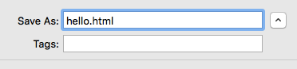

A comprehensive lesson plan / guide for those with little-to-no coding experience who want to learn how to program (and program well)!
Before you can get to coding, there are a few things you can do to setup your coding environment. Investing in some quick setup tools can go a long way as you practice and improve your abilities. So, let's jump in!
Download a text editor
What is a text editor? A text editor is a program in which you'll write most of your code. In the context of coding, think of it as a Microsoft Word, but for coding languages.
There are many great text editors you can download. The ones I've listed below are free and my two favorites. I would recommend purchasing Sublime if you end up using it a lot and like it, but you'll never be required to. You only need one text editor, so no need to download both. Also, if there is another text editor out there you like better, you should download that one (and email me so I can add it to the list!)
Once you have the text editor downloaded, you can open the program (again, like you would a new Word doc), type up some code and save it. The coolest part about these text editors is that, after you save the file and let the editor know what coding language that file is in, these editors will highlight important aspects of the code in the language you are using. This will make it much easier to code!
But how do you let the editor know what language you are using? The answer to this question wasn't very obvious to me! You do this when you save the file by adding your own extension. For example if I am writing an html document and I want to name it "hello", I would type hello.html where the file tells me to name the file as I save it. Here is a screenshot:

The extension will be different depending on what language the file is in. Here is a stack overflow article with a few of the most common extensions by language.
Now you have an easy way to write and save your code! I recommend creating a folder in Documents or on your Desktop where you can save all of your new coding files. Now, before you get started, is a prime time to do this!
Next: Command Line!